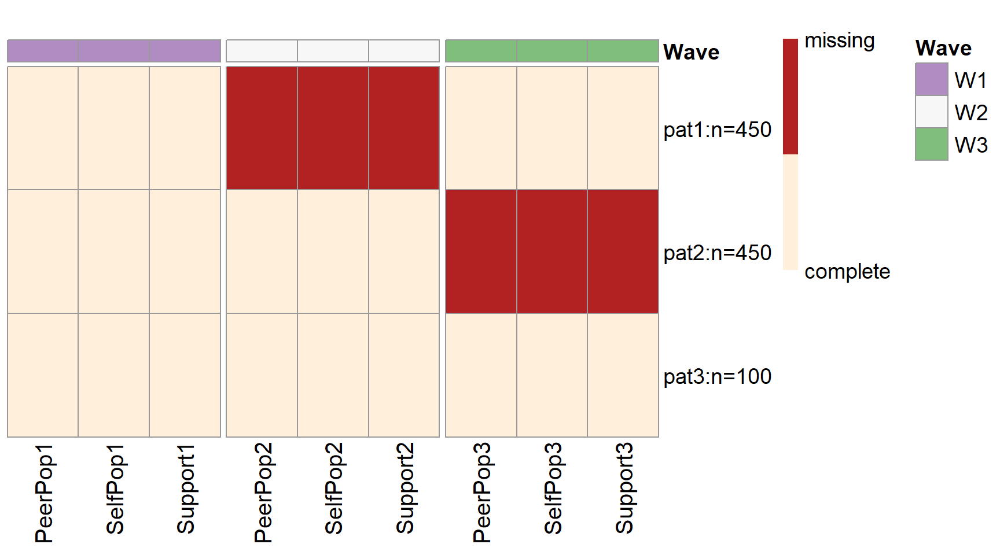

An example of PHPM with an autoregressive and cross-lagged model
Yi Feng & Gregory R. Hancock
Autoregressive-Cross-Lagged-Model.RmdIn this vignette we will demonstrate how to use simPM to search for an optimal PHPM design for a longitudinal research study that employs an utoregressive and cross-lagged model.
Research Scenario
Suppose a group of researchers is interested in examining the longitudinal reciprocal relations between peer relationships and teacher-child relationships. They have been funded for a longitudinal panel study following 1000 children for three years. Each year they would collect data on three measures: two measures of peer relationships (self-perceived popularity and peer-perceived popularity) and one measure of teacher-child relationships (teacher-child support). Upon the completion of data collection, they plan to fit an autoregressive cross-lagged model shown below. The parameter of focal interest to the researchers are the cross-lagged path coefficients predicting the peer-perceived popularity from the self-perceived popularity measured at the previous time point, as well as in the cross-lagged paths predicting teacher-child support from the peer-perceived popularity measured at the previous time point (marked in red).
Unfortunately, after the first wave of data collection, the funding agency announces a 30% reduction in the remaining funding. The researcher wishes to continue the project under the budget constraint, with the hope to not compromise the scientific rigor and statistical power. The reseacher thus decideds to use simPM to find a design that yields sufficient power but costs no more than the reduced budget.

An autoregressive and cross-lagged model
Spcify the Population and Analysis Model
Because simPM searches for an optimal design based on power analysis using Monte Carlo simulations, it is thus required to supply a population model and analysis model. The easiest way to specify the population model and analysis model is to use the lavaan model syntax. For this example, the population model is specified as follows:
popModel <- '
SelfPop2~0.609*SelfPop1+0.111*PeerPop1
SelfPop3~0.587*SelfPop2+0.053*PeerPop2
PeerPop2~0.051*SelfPop1+0.647*PeerPop1+(-0.056)*Support1
PeerPop3~0.056*SelfPop2+0.679*PeerPop2+0.075*Support2
Support2~0.468*Support1+0.124*PeerPop1
Support3~0.280*Support2+0.132*PeerPop2
PeerPop1~~0.229*SelfPop1+0.064*Support1
SelfPop1~~0.007*Support1
PeerPop2~~0.079*SelfPop2+(-0.036)*Support2
SelfPop2~~0.055*Support2
PeerPop3~~0.052*SelfPop3+0.013*Support3
SelfPop3~~(-0.034)*Support3
#means
PeerPop1~3.273*1
SelfPop1~0.048*1
Support1~2.905*1
PeerPop2~1.247*1
SelfPop2~(-0.343)*1
Support2~1.193*1
PeerPop3~0.814*1
SelfPop3~(-0.161)*1
Support3~1.451*1
#variances
PeerPop1~~0.447*PeerPop1
SelfPop1~~1.010*SelfPop1
Support1~~0.540*Support1
PeerPop2~~0.238*PeerPop2
SelfPop2~~0.607*SelfPop2
Support2~~0.432*Support2
PeerPop3~~0.211*PeerPop3
SelfPop3~~0.380*SelfPop3
Support3~~0.424*Support3
'The analysis model is specified as the same autoregressive and cross-lagged model but with freely estimated model parameters:
analyzeModel <- '
SelfPop2~SelfPop1+PeerPop1
SelfPop3~SelfPop2+PeerPop2
PeerPop2~SelfPop1+PeerPop1+Support1
PeerPop3~SelfPop2+PeerPop2+Support2
Support2~Support1+PeerPop1
Support3~Support2+PeerPop2
PeerPop1~~SelfPop1+Support1
SelfPop1~~Support1
PeerPop2~~SelfPop2+Support2
SelfPop2~~Support2
PeerPop3~~SelfPop3+Support3
SelfPop3~~Support3
#means
PeerPop1~1
SelfPop1~1
Support1~1
PeerPop2~1
SelfPop2~1
Support2~1
PeerPop3~1
SelfPop3~1
Support3~1
#variances
PeerPop1~~PeerPop1
SelfPop1~~SelfPop1
Support1~~Support1
PeerPop2~~PeerPop2
SelfPop2~~SelfPop2
Support2~~Support2
PeerPop3~~PeerPop3
SelfPop3~~SelfPop3
Support3~~Support3
'Wave-level PHPM Designs
1. Search for an Optimal Wave-level Design
We can use the main function simPM() to search for an optimal wave-level missing design. For simPM() to work properly, we need to supply the relevant information about this longitudinal study. By running the following code, simPM will automatically map out all the possible wave-level PHPM designs, run power analysis for each plausible design, and output the optimal design.
wave.ex3 <- simPM(popModel = popModel, #supply the population model using lavaan syntax
analyzeModel = analyzeModel, #supply the analysis model using lavaan syntax
VarNAMES = c("PeerPop1","SelfPop1","Support1",
"PeerPop2","SelfPop2","Support2",
"PeerPop3","SelfPop3","Support3"), #the observed variable names, grouped in waves, in chronological order
distal.var = NULL, #specify any distal variables that are not subject to planned missingness
n = 1000, #original sample size
nreps = 1000, #number of replications for Monte Carlo simulation
seed = 1234, #random seed
Time = 3, #total number of waves
k = 3, #number of observed variables collected at each wave
Time.complete = 1, #number of waves completed before funding cut occurs
costmx = c(5, 5, 5, 10, 10, 10), #unit cost of each data point at the following waves
pc = 0.1, #percentage of participants to provide complete data after funding cut
pd = 0, #percentage of participants to provide no data after funding cut
focal.param=c("PeerPop2~SelfPop1",
"Support2~PeerPop1",
"PeerPop3~SelfPop2",
"Support3~PeerPop2"), #specify the focal parameters, using lavaan syntax
eval.budget = T, #whether or not there is a budget restriction
rm.budget = 45*1000*0.7, #the amount of remaining available budget
complete.wave = NULL, #specify any future wave that need complete data to be collected
engine = "l", #use lavaan and simsem to fit the models
methods = "wave" #type of PHPM designs under consideration, "wave" indicates wave-level missing
)
More specifically:
-
VarNAMES = c("PeerPop1","SelfPop1","Support1", "PeerPop2","SelfPop2","Support2","PeerPop3","SelfPop3","Support3"): The observed variables collected in this study are named PeerPop1, SelfPop1, Support1, PeerPop2, SelfPop2, Support2, PeerPop3, SelfPop3, Support3. -
Time = 3: The study has 3 waves of data collection in total. -
Time.complete = 1: One wave of data collection has been completed before funding cut occurs. -
k = 3: Three observed variable are collected at each wave of data collection. -
pc = 0.1: Ten percent of the participants are randomly assigned to provide complete data for future waves after funding cut. -
pd = 0: Zero percent of the participants are assigned to drop from the study. -
costmx = c(5, 5, 5, 10, 10, 10): The unit cost of collecting one report from the father, the mother, or the teacher is $5 at wave 2 and $10 at wave 3.
-
n = 1000: The original sample size planned was 1,000. -
nreps = 1000: The program will run 1000 replications for Monte Carlo simulation (for each plausible design). -
focal.param=c("PeerPop2~SelfPop1","Support2~PeerPop1","PeerPop3~SelfPop2","Support3~PeerPop2"): The focal parameters of interest are the cross-lagged path coefficients predicting peer-perceived popularity from self-perceived popularity and the cross-lagged path coefficients predicting teacher-child support from peer-perceived popularity. -
complete.wave = NULL: No future waves are by design to have complete data colleted from all of the three sources. -
eval.budget = T: Yes, there is a budget restriction that needs to be taken into consideration. -
rm.budget = 45*1000*0.7: After the funding cut, the researcher will have \(\$31,500\) \((=45\times1000\times0.7)\) to support the future waves of data collection. -
distal.var = NULL: There are no distal variables in the model that are not subject to repeated measures. -
engine = "l": Data were simulated usingsimsemand the models were fitted usinglavaan. -
methods = "wave": Search for wave-level missing designs.
2. Summarize the Result
To view a summary of the results, we can use the summary.simpm() function. It prints out the comparison among all the plausible wave-level missing designs (with regard to the parameter with the lowest empirical power), the optimal design that was selected, the details about the focal parameters for the selected optimal design, the missing data pattern for the selected optimal PHPM design, and the proportion as well as the number of participants assigned to each unqie missing data pattern.
For this example, there is only one possible wave-level PHPM design given the budget constraints. Therefore, the program has run simulations only for this one possible design. This design costs $24,750, which is below the reduced available budget.
[1] "=================results summary================"
convergence.rate weakest.param.name weakest.para.power cost.design miss.waves
1 1 PeerPop3~SelfPop2 0.358 24750 1
[1] "=================Optimal design================="
convergence.rate weakest.param.name weakest.para.power cost.design miss.waves
1 1 PeerPop3~SelfPop2 0.358 24750 1With this design, 10% of the participants are assigned to provide complete data across all the future waves of data collection. The rest 90% of the participants are randomly assigned to one of the three unique missing data patterns (\(n=450\) in each pattern).
[1] "=================Optimal patterns==============="
PeerPop1 SelfPop1 Support1 PeerPop2 SelfPop2 Support2 PeerPop3 SelfPop3 Support3
0 0 0 1 1 1 0 0 0
0 0 0 0 0 0 1 1 1
completers 0 0 0 0 0 0 0 0 0
[1] "=================Optimal probs=================="
[1] 0.45 0.45 0.10
[1] "=================Optimal ns===================="
[1] 450 450 100Over 1000 replications, this design yields poor statistical power for testing most of the focal parameters. The empirical power for testing \(b_{PS_1}\) is 0.681 and 0.358 for testing \(b_{PS_2}\). The power is 0.834 for testing \(b_{TP_1}\) and 0.642 for testing \(b_{TP_2}\).
[1] "=================Optimal design for focal parameters================="
Estimate Average Estimate SD Average SE Power (Not equal 0) Std Est Std Est SD Std Ave SE Average Param Average Bias
PeerPop2~SelfPop1 0.05015451 0.02113615 0.02038431 0.681 0.07585215 0.03185897 0.03076342 0.051 -8.454893e-04
Support2~PeerPop1 0.12303069 0.04152845 0.04179084 0.834 0.10939710 0.03665247 0.03692004 0.124 -9.693051e-04
PeerPop3~SelfPop2 0.05607364 0.03602006 0.03485226 0.358 0.08512223 0.05447372 0.05276132 0.056 7.363818e-05
Support3~PeerPop2 0.13345178 0.05734917 0.05745153 0.642 0.12809893 0.05467605 0.05477553 0.132 1.451783e-03
Coverage Average FMI1 SD FMI1
PeerPop2~SelfPop1 0.936 0.3647029 0.02633273
Support2~PeerPop1 0.955 0.4380497 0.02350980
PeerPop3~SelfPop2 0.936 0.8057133 0.01852440
Support3~PeerPop2 0.951 0.7088486 0.02283863To view more details of the optimal PHPM design, we can use the following code, which will print out the detailed model fitting results over the replications.
3. Visualize the Optimal Design
To visualize the missing data patterns of the optimal PHPM design, we can use the plotPM() function. It will plot the missing data pattern matrix so people can have a more intuitive understanding of the optimal design that was selected. In this plot, each row represents a unique missing data pattern. Each column represents an observed variable. The number of participants assigned to each missing data pattern is also labeled.

Balanced Item-level PHPM Designs
1. Search for an Optimal Item-level Design
We can also use the function simPM() to search for an optimal item-level missing design. The code to search for optimal item-level PHPM designs is very similar to the code to search for optimal wave-level PHPM designs. The minor differences in the code are followed with comments.
item.ex3 <- simPM(
popModel,
analyzeModel,
VarNAMES=c("PeerPop1","SelfPop1","Support1","PeerPop2","SelfPop2","Support2","PeerPop3","SelfPop3","Support3"),
distal.var = NULL,
n=1000,
nreps=10,
seed=12345,
Time=3,
k=3,
Time.complete=1,
costmx=c(5,5,5,10,10,10),
pc=0.1,
pd=0,
focal.param=c("PeerPop2~SelfPop1","Support2~PeerPop1","PeerPop3~SelfPop2","Support3~PeerPop2"),
eval.budget=T,
rm.budget=31500L, # remaining available budget 45*1000*0.7
complete.var=NULL,
engine="l",
methods="item"
)While most of the arguments are the same as in the case of wave-level missing designs, there are two arguments that are a little bit different in the context of item-level missing designs:
-
complete.var = NULL: No observed variables are by design to have complete data colleted from all participants in the future waves of data collection. -
methods = "item": Search for item-level missing designs.
2. Summarize the Result
Similarly, to view a summary of the results, we can use the summary() function.
For this example, given the budget constraints, there are four plausible item-level PHPM designs (with missingness balanced across the patterns). The program thus has run simulations for all the four plausible designs and made comparisons across the designs. The optimal design among the 4 balanced item-level missing designs will cost $31,500, which is equal to the reduced available budget.
[1] "=================results summary================"
convergence.rate weakest.param.name weakest.para.power cost.design miss.point
1 1 PeerPop3~SelfPop2 0.721 31500 2
2 1 PeerPop3~SelfPop2 0.523 24750 3
3 1 PeerPop3~SelfPop2 0.361 18000 4
4 1 PeerPop3~SelfPop2 0.257 11250 5
[1] "=================Optimal design================="
convergence.rate weakest.param.name weakest.para.power cost.design miss.point
1 1 PeerPop3~SelfPop2 0.721 31500 2With this design, 10% of the participants are assigned to provide complete data across all the future waves of data collection. The rest 90% of the participants are randomly assigned to one of the 15 unique missing data patterns (\(n=60\) in each pattern). In each missing data pattern, the participants are assigned to miss four observed indicators (items) in the future waves of data collection (e.g., self-perceived popularity at wave 2 and peer-perceived popularity at wave 3).
[1] "=================Optimal patterns==============="
PeerPop1 SelfPop1 Support1 PeerPop2 SelfPop2 Support2 PeerPop3 SelfPop3 Support3
0 0 0 1 1 0 0 0 0
0 0 0 1 0 1 0 0 0
0 0 0 1 0 0 1 0 0
0 0 0 1 0 0 0 1 0
0 0 0 1 0 0 0 0 1
0 0 0 0 1 1 0 0 0
0 0 0 0 1 0 1 0 0
0 0 0 0 1 0 0 1 0
0 0 0 0 1 0 0 0 1
0 0 0 0 0 1 1 0 0
0 0 0 0 0 1 0 1 0
0 0 0 0 0 1 0 0 1
0 0 0 0 0 0 1 1 0
0 0 0 0 0 0 1 0 1
0 0 0 0 0 0 0 1 1
completers 0 0 0 0 0 0 0 0 0
[1] "=================Optimal probs=================="
[1] 0.06 0.06 0.06 0.06 0.06 0.06 0.06 0.06 0.06 0.06 0.06 0.06 0.06 0.06 0.06 0.10
[1] "=================Optimal ns===================="
[1] 60 60 60 60 60 60 60 60 60 60 60 60 60 60 60 100Over 1000 replications, this design yields an empirical power of 0.786 for testing the path coefficient \(b_{PS_1}\), 0.721 for testing the path coefficient \(b_{PS_2}\), 0.917 for testing the path coefficient \(b_{TS_1}\), and 0.890 for testing the path coefficient \(b_{TS_2}\).
[1] "=================Optimal design for focal parameters================="
Estimate Average Estimate SD Average SE Power (Not equal 0) Std Est Std Est SD Std Ave SE Average Param Average Bias
PeerPop2~SelfPop1 0.05055570 0.01874772 0.01847418 0.786 0.07640485 0.02824061 0.02788479 0.051 -0.0004443034
Support2~PeerPop1 0.12345953 0.03710990 0.03693612 0.917 0.10985168 0.03249985 0.03269727 0.124 -0.0005404742
PeerPop3~SelfPop2 0.05675102 0.02228946 0.02215252 0.721 0.08639815 0.03395195 0.03365353 0.056 0.0007510192
Support3~PeerPop2 0.13073982 0.04158240 0.04079068 0.890 0.12585197 0.03996419 0.03892887 0.132 -0.0012601844
Coverage Average FMI1 SD FMI1
PeerPop2~SelfPop1 0.943 0.2266084 0.01766973
Support2~PeerPop1 0.953 0.2816413 0.02098447
PeerPop3~SelfPop2 0.939 0.5163652 0.02112441
Support3~PeerPop2 0.940 0.4224801 0.02196725To view more details of the optimal PHPM design, we can use the following code, which will print out the detailed model fitting results over the replications.
3. Visualize the Optimal Design
Similarly, to visualize the missing data patterns of the optimal PHPM design, we can use the plotPM() function. As shown in the plot, …

Item-level PHPM Designs via Forward Assembly
1. Search for an Optimal Item-level Design via Forward Assembly
We can also use the function simPM() to search for an optimal item-level missing design via forward assembly. We only need to change a few arguments within the simPM() function in order to do forward assembly.
forward.ex3 <- simPM(
popModel,
analyzeModel,
VarNAMES=c("PeerPop1","SelfPop1","Support1","PeerPop2","SelfPop2","Support2","PeerPop3","SelfPop3","Support3"),
distal.var = NULL,
n=10,
nreps=1000,
seed=12345,
Time=3,
k=3,
max.mk=3,
Time.complete=1,
costmx=c(5,5,5,10,10,10),
pc=0.1,
pd=0,
focal.param=c("PeerPop2~SelfPop1","Support2~PeerPop1","PeerPop3~SelfPop2","Support3~PeerPop2"),
eval.budget=T,
rm.budget=31500L,
complete.var=NULL,
engine="l",
methods="forward"
)While most of the arguments remains the same as in balanced item-level missing designs, here are a few arguments that are different and thus we offer a summary below:
-
max.mk = 3: In this example, the researcher would want to consider the PM designs with no more than 3 unique missing data patterns. -
methods = "forward": Search for item-level missing designs via forward assembly.
2. Summarize the Result
Similarly, to view a summary of the results, we can use the summary() function.
Based on the output, this optimal design costs $30,000, which is below the reduced available budget.
[1] "=================Optimal design================="
convergence.rate weakest.param.name weakest.para.power cost.design miss.num miss.var1 miss.var2 miss.var3 sim.seq miss.loc1
16 1 PeerPop2~SelfPop1 0.885 30000 3 SelfPop2 SelfPop3 Support3 16 5
miss.loc2 miss.loc3
16 8 9With this design, 10% of the participants are assigned to provide complete data across all the future waves of data collection. The rest 90% of the participants are randomly assigned to one of the three unique missing data patterns (\(n=300\) in each pattern).
[1] "=================Optimal patterns==============="
PeerPop1 SelfPop1 Support1 PeerPop2 SelfPop2 Support2 PeerPop3 SelfPop3 Support3
0 0 0 0 1 0 0 1 1
0 0 0 0 0 1 0 1 0
0 0 0 0 0 0 0 1 0
completers 0 0 0 0 0 0 0 0 0
[1] "=================Optimal probs=================="
[1] 0.3 0.3 0.3 0.1
[1] "=================Optimal ns===================="
[1] 300 300 300 100Over 1000 replications, this design yields an empirical power of 0.885 for testing the path coefficient \(b_{PS_1}\), 0.914 for testing the path coefficient \(b_{PS_2}\), 0.906 for testing the path coefficient \(b_{TS_1}\), and 0.937 for testing the path coefficient \(b_{TS_2}\). With this PHPM design, the statistical power is satisfactory for testing each of the focal parameters.
[1] "=================Optimal design for focal parameters================="
Estimate Average Estimate SD Average SE Power (Not equal 0) Std Est Std Est SD Std Ave SE Average Param
PeerPop2~SelfPop1 0.0509315 0.01593366 0.01625888 0.885 0.07715693 0.02407530 0.02460888 0.051
Support2~PeerPop1 0.1225502 0.03691843 0.03681819 0.906 0.10899450 0.03257593 0.03257226 0.124
PeerPop3~SelfPop2 0.0568749 0.01686760 0.01728927 0.914 0.08652626 0.02558155 0.02628572 0.056
Support3~PeerPop2 0.1313719 0.03780042 0.03793717 0.937 0.12610467 0.03596546 0.03609359 0.132
Average Bias Coverage Average FMI1 SD FMI1
PeerPop2~SelfPop1 -6.849557e-05 0.951 0.004906487 0.002715199
Support2~PeerPop1 -1.449846e-03 0.937 0.275855979 0.020332822
PeerPop3~SelfPop2 8.748955e-04 0.947 0.202017999 0.015647460
Support3~PeerPop2 -6.281368e-04 0.951 0.330559605 0.020608104To view more details of the optimal PHPM design, we can use the following code, which will print out the detailed model fitting results over the replications.
3. Visualize the Optimal Design
Similarly, to visualize the missing data patterns of the optimal PHPM design, we can use the plotPM() function. As shown in the plot, …